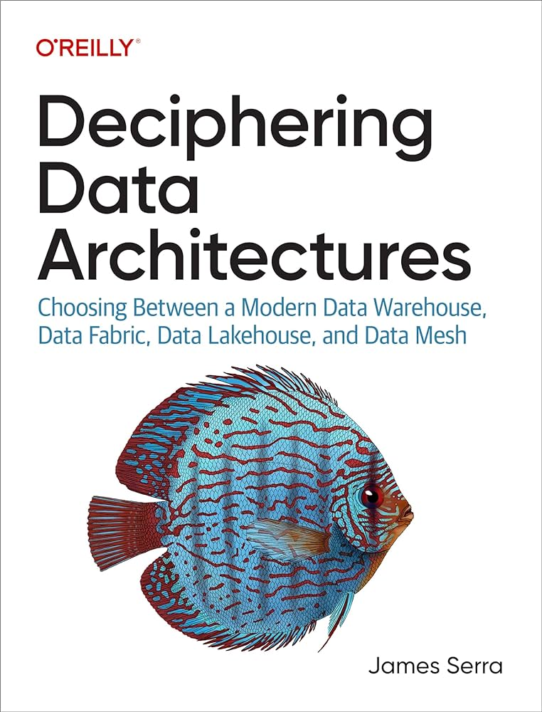

In the last decade the field of data management has evolved rapidly, the emergence of new architectures alongside the traditional data warehouse has stirred both excitement and more often confusion among professionals. James Serra’s “Deciphering Data Architectures” arrives to bring some semblance of clarity, offering a comprehensive guide to navigate through this complex landscape. This isn’t a comprehensive review, but a highlight of some to the things I liked in Serra’s work.
Vendor Neutrality Link to heading
One of the most commendable aspects of Serra’s book is its vendor neutrality. In a domain often dominated by marketing speak big-name vendors, Serra’s approach is refreshingly unbiased, focusing purely on the architectural merits and considerations without a hint of sales pitch. This objective stance extends throughout the book, ensuring that discussions remain focused on helping readers understand the essentials of each architecture, free from the clutter of brand-driven agendas.
Opinions Expressed Fairly Link to heading
Serra does not shy away from expressing opinions, a quality that adds depth to the book. However, what sets this apart is the fairness with which differing viewpoints are acknowledged. For instance, in the discussion of data fabrics, Serra articulates his stance on virtualization not being a necessity—a point some, including myself, might contest. His openness to divergence enriches the dialogue, inviting readers to form their own educated opinions.
Golden Nugget One on Architecture Design Sessions Link to heading
Among the trove of insights, the chapter three is dedicated to conducting an Architecture Design Session and it’s one of two standout sections. Drawing on Serra’s deep understanding and experience, it’s just a very practical guide that I haven’t seen anyone else spell out. This segment could serve as a standalone guide for architects and developers embarking on the journey of designing robust data systems.
Balanced Analysis and Myth Busting Link to heading
Serra’s balanced examination of various architectures, highlighting their pros and cons, is particularly useful for readers looking to make informed choices. Here Serra is doing to the work filling out the tradeoffs of “it depends”. Furthermore, the book ventures into myth-busting territory, challenging widespread misconceptions about data architecture giants Inmon and Kimball. This approach not only clarifies doubts but also enriches the reader’s understanding of the field’s historical and theoretical foundations.
Gold Nugget Two on People and Processes Link to heading
Perhaps the most resonating message from Serra’s work is encapsulated in Chapter Fifteen, where the focus shifts from technology to people and processes. Here, Serra tackles the often-overlooked elements that spell the difference between success and failure in data projects. By dissecting the reasons behind common pitfalls and offering actionable tips, this chapter serves as a crucial reminder that at the heart of every successful implementation are well-coordinated teams and well-defined processes.
Conclusion Link to heading
In “Deciphering Data Architectures,” James Serra has crafted a resource that stands as both a compass and a map for data professionals navigating the complex terrain of modern data architectures. With its vendor-neutral stance, balanced opinions, practical insights, and emphasis on the human factors of data project success, this book is a must-read for anyone looking to deepen their understanding of data architectures or to steer their projects toward successful outcomes.